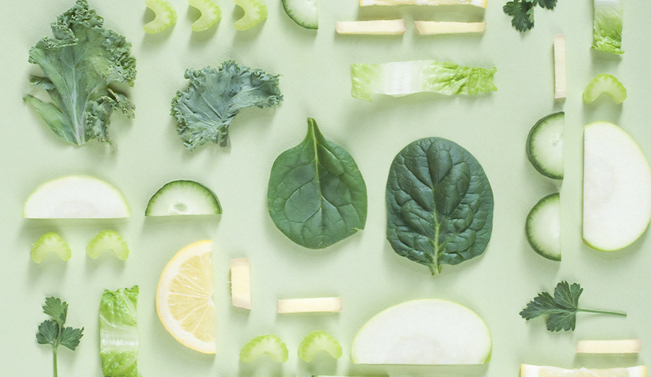
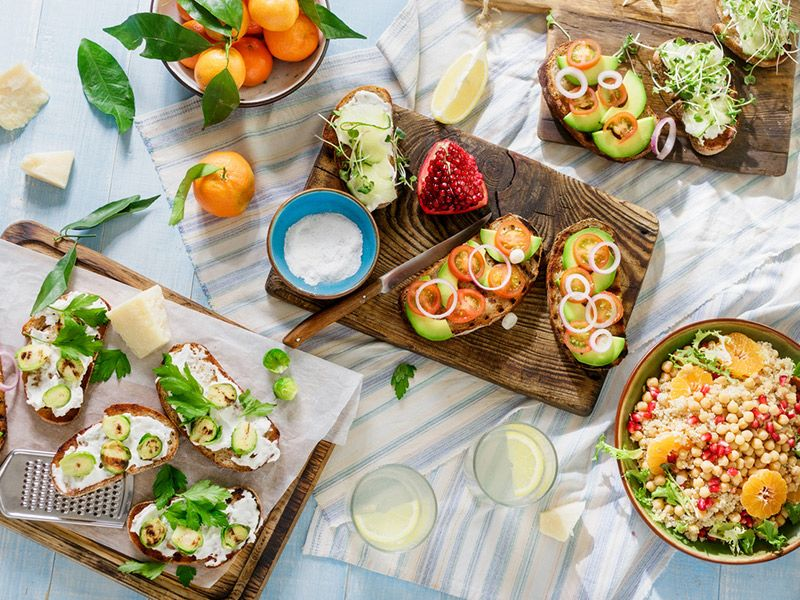
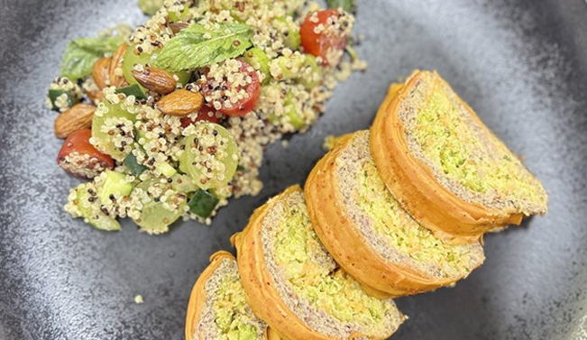

COMO INCLUIR OPÇÕES VEGANAS NO CARDÁPIO?
Você consegue pensar em restaurantes com opções veganas no cardápio que sejam equilibradas nutricionalmente e, ainda por cima, bonitas e saborosas? Esse costumava ser um diferencial para atender um público restrito e virou necessidade com a popularidade de dietas plant based, aquelas que usam os vegetais como base. Seja pelo cuidado com a saúde,
Nos últimos anos, testemunhamos um aumento significativo na popularidade das dietas baseadas em plantas, impulsionadas pelo crescente interesse em saúde, sustentabilidade e preocupações éticas em relação ao consumo de alimentos. Com isso, a demanda por opções veganas em restaurantes tem crescido exponencialmente. No entanto, não basta apenas oferecer pratos sem produtos de origem animal; é essencial garantir que essas opções sejam equilibradas nutricionalmente, visualmente atraentes e, é claro, deliciosas.
Para oferecer opções veganas atrativas e equilibradas nutricionalmente, você não precisa ser especializado neste nicho nem fazer grandes investimentos. O ponto principal é transformar sua empresa em um local de confiança onde pessoas com qualquer preferência ou restrição alimentar poderá encontrar pratos com as quantidades e proporcões ideais de carboidratos, proteínas, fibras e boas gorduras.
Com um pouco de criatividade e estudo você descobre que criar pratos incríveis com vegetais é mais fácil do que imagina. Além de adaptar pratos clássicos, você pode explorar preparações versáteis com diferentes cortes, temperos e modos de preparo criando novas combinações de sabores.
Dicas para escolher os ingredientes das opções veganas e vegetarianas do cardápio
Proteínas – As proteínas vegetais são encontradas principalmente nas leguminosas e oleaginosas. Utilize feijão, lentilha, grão de bico, ervilha, edamame e soja orgânica.
Para surpreender seu cliente, você pode tanto fazer preparações com esses alimentos em suas formas originais como em variações como bolinhos, almôndegas, hambúrgueres, quibes, pastinhas e tofu.
Cuidado, as oleaginosas e sementes são ótimas fontes de gordura, mas é importante ter cuidado para não utilizar demais destes ingredientes para não elevar demais o valor calórico total da refeição.
Carboidratos – Você deve dar preferência aos grãos e cereais integrais, como quinoa, aveia, amaranto e arroz integral. Tubérculos e raízes como as batatas, inhame, cará, aipim também são ótimas opções, ricas em fibras, que trarão mais saciedade através de uma digestão mais lenta.